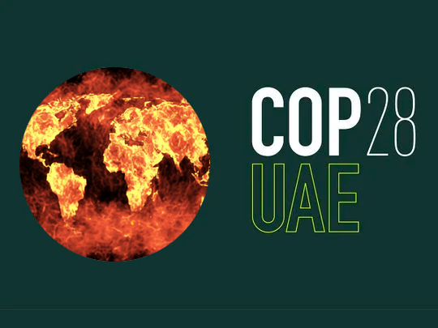
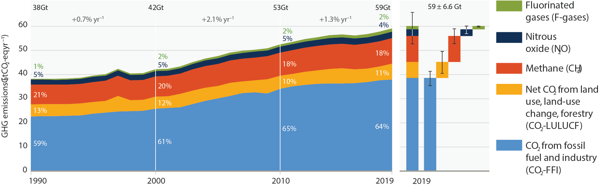
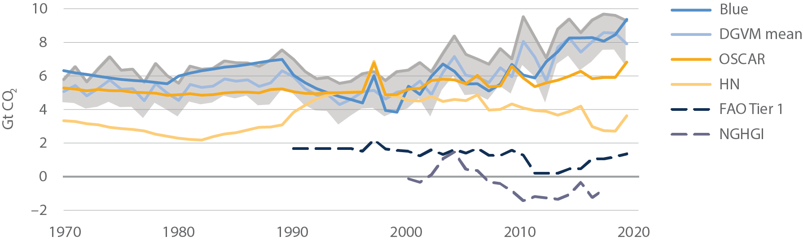
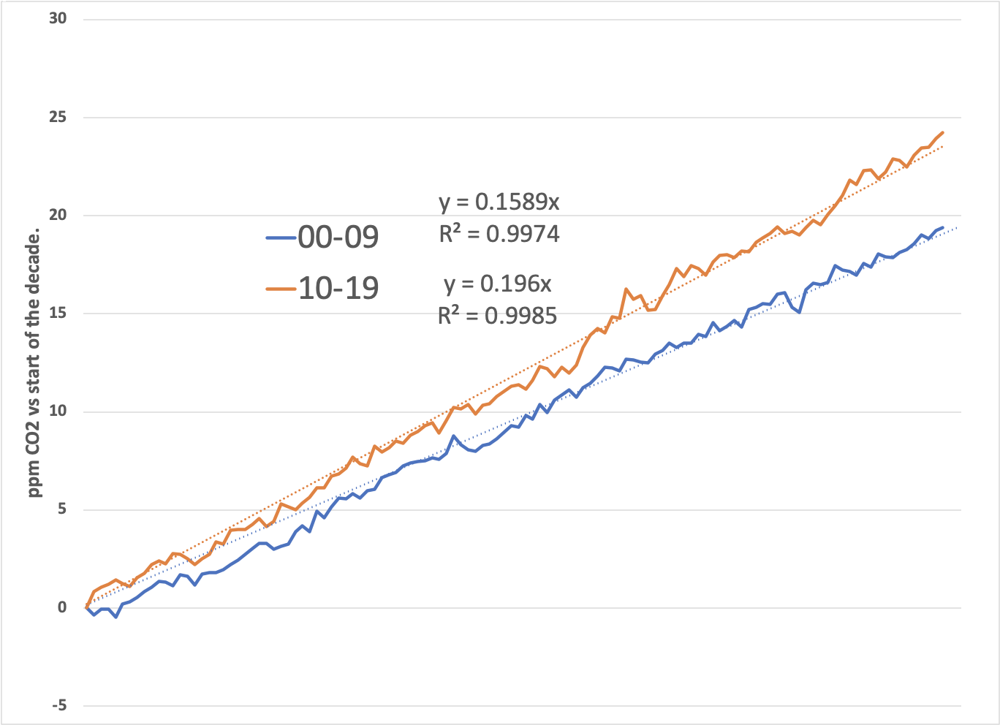
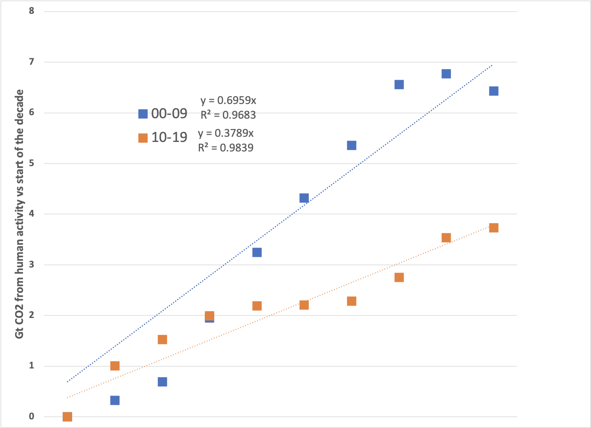

In the last issue, I reiterated my conclusion that humans are making no progress in climate control. Unfortunately, the IPCC (comprised of ‘thousands of scientists’) begs to differ, and whenever there’s a difference of opinion in scientific discourse, the ultimate referee is data.
We are approaching the twenty-eighth annual Conference of Parties (COP28). This climate nerd festival is scheduled for late December in Dubai, UAE, of all places. It would have been more relevant had they held it in July, when the thermometer rose above 120°F (50°C) for two consecutive days in the UAE .

This is the third such conference held since I started this endeavor. Over 33,000 people from 195 countries met in Egypt the last time to discuss political solutions to an engineering problem. Ultimately, they decided that the best strategy was to throw other people’s money at the problem. Instead of fixing the problem, this recommendation fixed the blame, aiming for “justice” by moving money from more affluent to poorer nations. This is the equivalent of a lawsuit payout for wrongful death—it might make both sides feel a little better about the outcome, but the victim is still dead. Just as “money can’t buy happiness”, money cannot solve our climate control problem all by itself. After all, as crypto enthusiasts point out, money is just a concept.
I’ve criticized the IPCC’s inattention to primary data several times before. Thinking further, I thought I should attempt to understand and explain their conclusion to see if it’s my blind spot or the IPCC’s. I’m a lone scientist criticizing a well-established panel of experts, so it’s worth careful validation since it is far more likely to be my blind spot than theirs.
Let’s revisit the following “conclusion” from IPCC’s 6th Assessment Report, Working Group III, Summary for Policy Makers, here :
Total net anthropogenic GHG emissions have continued to rise during the period 2010 – 2019, as have cumulative net CO2 emissions since 1850. Average annual GHG emissions during 2010-2019 were higher than in any previous decade, but the rate of growth between 2010 and 2019 was lower than that between 2000 and 2009. (high confidence)
I discussed this in some detail in an earlier installment 1 . There is an explanatory footnote, but the statement is made with “high confidence”. In IPCC jargon, this is a somewhat non-specific description. No statistics are associated with this assertion, so we must go to the underlying data. The statement concerns the rate of growth (presumably the slope of a line) by comparing the ten annual data points from 2000 to 2009 to the ten from 2010 to 2019.
Here’s the associated graph:

So, from a scientific perspective, the average year-to-year change from 2000 to 2009 is +2.1%, and from 2010 to 2019 is +1.3%. The IPCC is very confident that those numbers are different. The IPCC provides an error estimate for the number of ±6.6 Gt on a total measurement of 59 Gt, with the most significant error (±5 Gt) on my favorite irrelevant measure, land use. Let’s assume that the collection and reporting have been consistent for the past two decades. What we need is the primary data for this graph.
That’s proven harder to find than you might imagine, given the usual hyper-transparency of IPCC’s work. [That’s my excuse for this week’s delayed release.] It turns out that the gas emissions come from the Emissions Database for Global Atmospheric Research (EDGAR), while land use is the average of three disparate models.
I think it’s valid to question whether land use should be included at all. Let’s dig slightly deeper:

To make a long story short, the authors chose models based on bookkeeping (the solid lines) over data (the dashed lines). That isn’t good, especially since the model doesn’t match the data. It is noisy and inconsistent with the rest of the chart.
So, what can we discover if we take LULUCF data from the summary chart? Removing that feature doesn’t affect the IPCC’s conclusion. For the decade ending in 2009, the average annual increase was 2.3%, and for the decade ending in 2019, the average yearly increase was 1.5%. The primary component, CO2, shows the same apparent slowing.
The open question is, “What’s changed, if anything?” It could be systematic changes in behavior, or it could be systematic changes in reporting or measurement, or perhaps improved predictions. We can look again at the primary data from Mauna Loa. Because we measure it, we know that the atmosphere has more CO2 every year, and we also know that the change is gradually accelerating. We’ve also established that human activity, particularly the combustion of geologic carbon, is a primary reason.
Here’s what we see:

During the 2000-2009 period, the atmosphere increased by about 0.16 ppm per month. During the 2010-2019 period, the atmosphere increased by about 0.2 ppm per month.
The EDGAR data people ask each member of the UN (through the IEA, a data set that would cost me 600 euros!) to report how much geologic carbon they burn every year and add it up. Here’s what they find:

During the 2000-2009 period, carbon emissions increased by about 0.7 Gt per year. During the 2010-2019 period, carbon emissions increased by about 0.4 Gt per year.
Unfortunately, the two trends don’t match. Figuring out why is a frustrating and somewhat pointless exercise. It’s like trying to figure out why you’re going broke by taking last month’s bank balance and subtracting everything you recall buying. The dollar bill you dropped and the $2.15 you forgot you spent on a coffee all contribute to an underestimate.
Nevertheless, I can speculate that a change in awareness or sense of importance between the two decades has led to a more careful (or possibly more selective) accounting of carbon emissions. It’s also possible that there are “forcing” factors that amplify past emissions through natural processes beyond what humans contribute. If that’s true, though, we’re in deep trouble because it would mean that consciously reducing human emissions in practice has no effect (on a decade time scale) on rising CO2 levels.
The bottom line: IPCC is technically correct that humans say they’re burning less geologic carbon than before. But it doesn’t make a lick of difference.